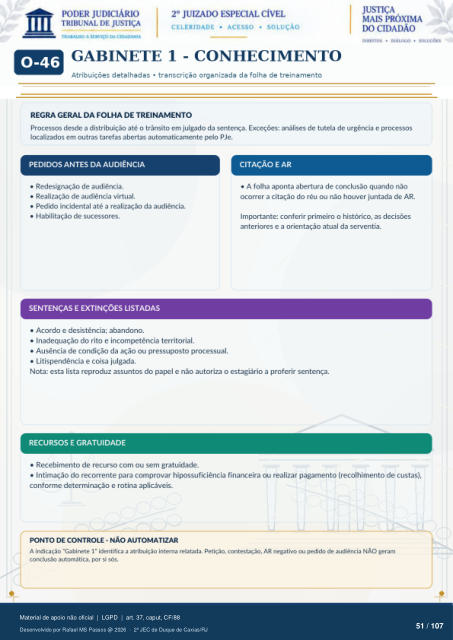

MÓDULO COMPLEMENTAR
GABINETE 1 - CONHECIMENTO
Atribuições detalhadas · transcrição organizada da folha de treinamento
REGRA GERAL DA FOLHA DE TREINAMENTO
Processos desde a distribuição até o trânsito em julgado da sentença. Exceções: análises de tutela de urgência e processos localizados em outras tarefas abertas automaticamente pelo PJe.
PEDIDOS ANTES DA AUDIÊNCIA
Redesignação de audiência.
Realização de audiência virtual.
Pedido incidental até a realização da audiência.
Habilitação de sucessores.
CITAÇÃO E AR
A folha aponta abertura de conclusão quando não
ocorrer a citação do réu ou não houver juntada de AR. Importante: conferir primeiro o histórico, as decisões anteriores e a orientação atual da serventia.
SENTENÇAS E EXTINÇÕES LISTADAS
Acordo e desistência; abandono.
Inadequação do rito e incompetência territorial.
Ausência de condição da ação ou pressuposto processual.
Litispendência e coisa julgada.
Nota: esta lista reproduz assuntos do papel e não autoriza o estagiário a proferir sentença.
RECURSOS E GRATUIDADE
Recebimento de recurso com ou sem gratuidade.
Intimação do recorrente para comprovar hipossuficiência financeira ou realizar pagamento (recolhimento de custas),
conforme determinação e rotina aplicáveis.
PONTO DE CONTROLE - NÃO AUTOMATIZAR
A indicação ·Gabinete 1· identifica a atribuição interna relatada. Petição, contestação, AR negativo ou pedido de audiência NÃO geram conclusão automática, por si sós.
Ver também o infográfico original (página 51)
